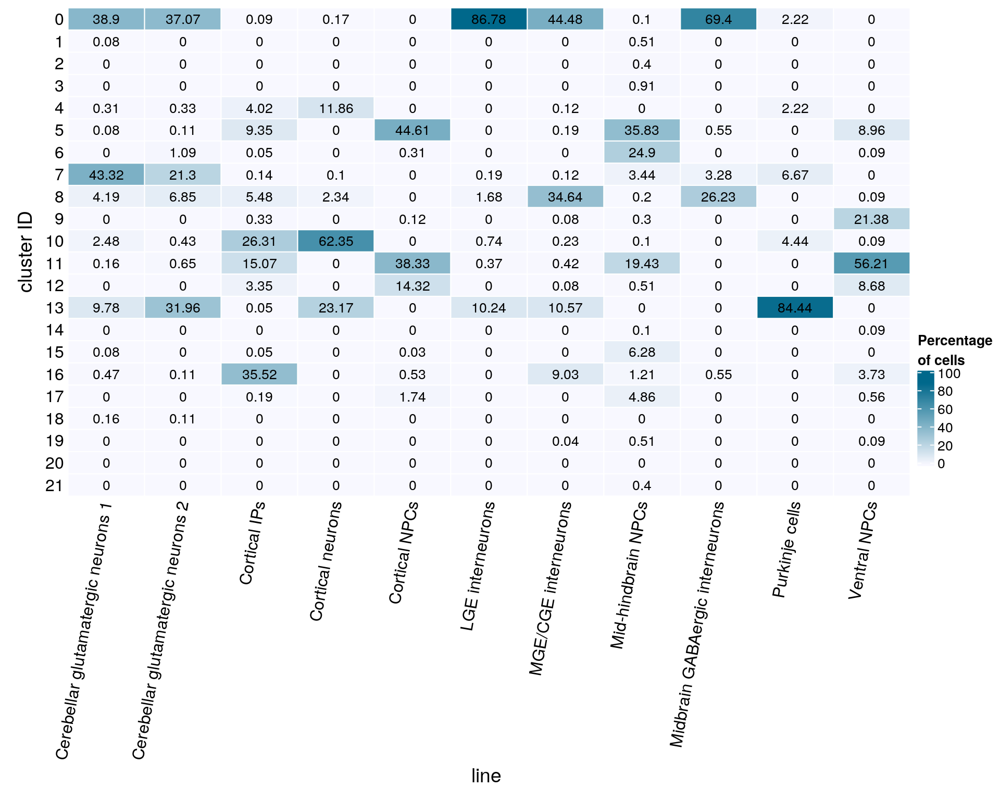
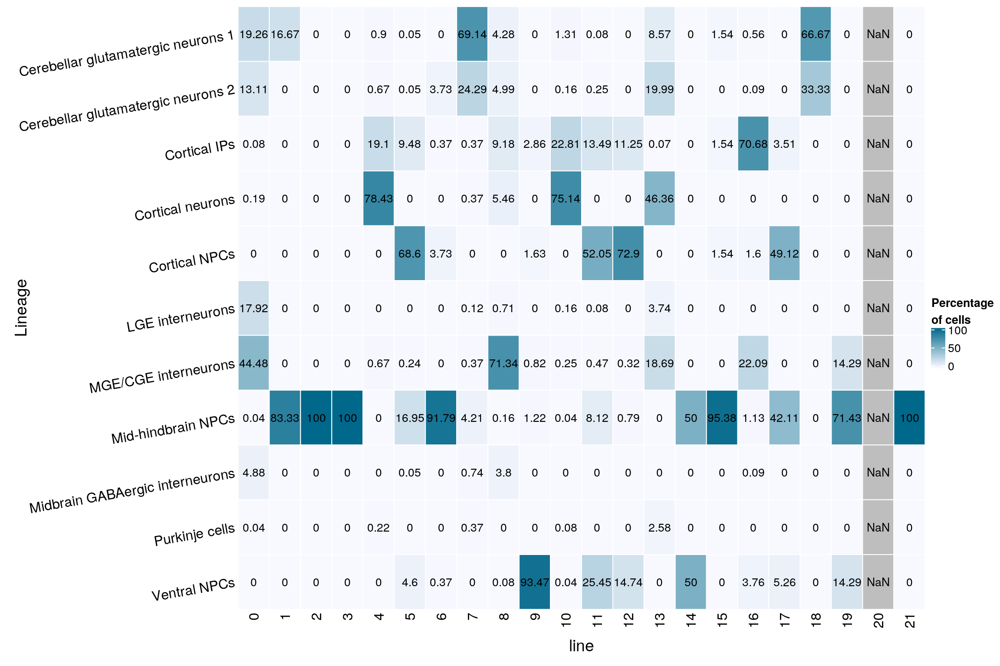
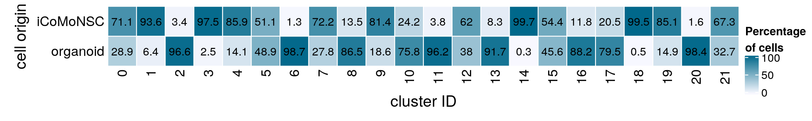

Cluster analysis
Katharina Hembach
4/7/2021
Last updated: 2021-09-06
Checks: 7 0
Knit directory: neural_scRNAseq/
This reproducible R Markdown analysis was created with workflowr (version 1.6.2). The Checks tab describes the reproducibility checks that were applied when the results were created. The Past versions tab lists the development history.
Great! Since the R Markdown file has been committed to the Git repository, you know the exact version of the code that produced these results.
Great job! The global environment was empty. Objects defined in the global environment can affect the analysis in your R Markdown file in unknown ways. For reproduciblity it's best to always run the code in an empty environment.
The command set.seed(20200522) was run prior to running the code in the R Markdown file. Setting a seed ensures that any results that rely on randomness, e.g. subsampling or permutations, are reproducible.
Great job! Recording the operating system, R version, and package versions is critical for reproducibility.
Nice! There were no cached chunks for this analysis, so you can be confident that you successfully produced the results during this run.
Great job! Using relative paths to the files within your workflowr project makes it easier to run your code on other machines.
Great! You are using Git for version control. Tracking code development and connecting the code version to the results is critical for reproducibility.
The results in this page were generated with repository version 8f1b6c0. See the Past versions tab to see a history of the changes made to the R Markdown and HTML files.
Note that you need to be careful to ensure that all relevant files for the analysis have been committed to Git prior to generating the results (you can use wflow_publish or wflow_git_commit). workflowr only checks the R Markdown file, but you know if there are other scripts or data files that it depends on. Below is the status of the Git repository when the results were generated:
Ignored files:
Ignored: .DS_Store
Ignored: .Rhistory
Ignored: .Rproj.user/
Ignored: ._.DS_Store
Ignored: ._Filtered.pdf
Ignored: ._Unfiltered.pdf
Ignored: .__workflowr.yml
Ignored: ._cms_PCA10_k1000_k_min200.pdf
Ignored: ._cms_PCA10_k500.pdf
Ignored: ._cms_PCA10_k700_batch_min100.pdf
Ignored: ._cms_PCA10_k700_batch_min50.pdf
Ignored: ._cms_PCA10_k_min100.pdf
Ignored: ._cms_PCA10_k_min200.pdf
Ignored: ._cms_PCA_10_k700.pdf
Ignored: ._cms_umap_PCA.pdf
Ignored: ._coverage.pdf
Ignored: ._coverage_sashimi.pdf
Ignored: ._coverage_sashimi.png
Ignored: ._iCLIP_nrXLs_markers.pdf
Ignored: ._neural_scRNAseq.Rproj
Ignored: ._pbDS_cell_level.pdf
Ignored: ._pbDS_top_expr_umap.pdf
Ignored: ._pbDS_upset.pdf
Ignored: ._sashimi.pdf
Ignored: ._stmn2.pdf
Ignored: ._tdp.pdf
Ignored: ._timeline_k1000.pdf
Ignored: ._timeline_k10000.pdf
Ignored: ._timeline_k500.pdf
Ignored: ._timeline_k5000.pdf
Ignored: analysis/.DS_Store
Ignored: analysis/.Rhistory
Ignored: analysis/._.DS_Store
Ignored: analysis/._01-preprocessing.Rmd
Ignored: analysis/._01-preprocessing.html
Ignored: analysis/._02.1-SampleQC.Rmd
Ignored: analysis/._03-filtering.Rmd
Ignored: analysis/._04-clustering.Rmd
Ignored: analysis/._04-clustering.knit.md
Ignored: analysis/._04.1-cell_cycle.Rmd
Ignored: analysis/._05-annotation.Rmd
Ignored: analysis/._07-cluster-analysis-all-timepoints.Rmd
Ignored: analysis/._Lam-0-NSC_no_integration.Rmd
Ignored: analysis/._Lam-01-NSC_integration.Rmd
Ignored: analysis/._Lam-02-NSC_annotation.Rmd
Ignored: analysis/._NSC-1-clustering.Rmd
Ignored: analysis/._NSC-2-annotation.Rmd
Ignored: analysis/._TDP-06-cluster_analysis.Rmd
Ignored: analysis/.__site.yml
Ignored: analysis/._additional_filtering.Rmd
Ignored: analysis/._additional_filtering_clustering.Rmd
Ignored: analysis/._index.Rmd
Ignored: analysis/._organoid-01-1-qualtiy-control.Rmd
Ignored: analysis/._organoid-01-clustering.Rmd
Ignored: analysis/._organoid-02-integration.Rmd
Ignored: analysis/._organoid-03-cluster_analysis.Rmd
Ignored: analysis/._organoid-04-group_integration.Rmd
Ignored: analysis/._organoid-04-stage_integration.Rmd
Ignored: analysis/._organoid-05-group_integration_cluster_analysis.Rmd
Ignored: analysis/._organoid-05-stage_integration_cluster_analysis.Rmd
Ignored: analysis/._organoid-06-1-prepare-sce.Rmd
Ignored: analysis/._organoid-06-conos-analysis-Seurat.Rmd
Ignored: analysis/._organoid-06-conos-analysis-function.Rmd
Ignored: analysis/._organoid-06-conos-analysis.Rmd
Ignored: analysis/._organoid-06-group-integration-conos-analysis.Rmd
Ignored: analysis/._organoid-07-conos-visualization.Rmd
Ignored: analysis/._organoid-07-group-integration-conos-visualization.Rmd
Ignored: analysis/._organoid-08-conos-comparison.Rmd
Ignored: analysis/._organoid-0x-sample_integration.Rmd
Ignored: analysis/01-preprocessing_cache/
Ignored: analysis/02-1-SampleQC_cache/
Ignored: analysis/02-quality_control_cache/
Ignored: analysis/02.1-SampleQC_cache/
Ignored: analysis/03-filtering_cache/
Ignored: analysis/04-clustering_cache/
Ignored: analysis/04.1-cell_cycle_cache/
Ignored: analysis/05-annotation_cache/
Ignored: analysis/06-clustering-all-timepoints_cache/
Ignored: analysis/07-cluster-analysis-all-timepoints_cache/
Ignored: analysis/CH-test-01-preprocessing_cache/
Ignored: analysis/CH-test-02-transgene-expression_cache/
Ignored: analysis/CH-test-03-cluster-analysis_cache/
Ignored: analysis/Lam-01-NSC_integration_cache/
Ignored: analysis/Lam-02-NSC_annotation_cache/
Ignored: analysis/NSC-1-clustering_cache/
Ignored: analysis/NSC-2-annotation_cache/
Ignored: analysis/TDP-01-preprocessing_cache/
Ignored: analysis/TDP-02-quality_control_cache/
Ignored: analysis/TDP-03-filtering_cache/
Ignored: analysis/TDP-04-clustering_cache/
Ignored: analysis/TDP-05-00-filtering-plasmid-QC_cache/
Ignored: analysis/TDP-05-plasmid_expression_cache/
Ignored: analysis/TDP-06-01-totalTDP-construct-quantification_cache/
Ignored: analysis/TDP-06-cluster_analysis_cache/
Ignored: analysis/TDP-07-01-STMN2_expression_cache/
Ignored: analysis/TDP-07-02-Prudencio_marker_expression_cache/
Ignored: analysis/TDP-07-03-Liu_sorted_nuclei_marker_expression_cache/
Ignored: analysis/TDP-07-04-Tollervey_marker_binding_cache/
Ignored: analysis/TDP-07-05-marker_gene_read_coverage_cache/
Ignored: analysis/TDP-07-cluster_12_cache/
Ignored: analysis/TDP-08-00-clustering-HA-D96_cache/
Ignored: analysis/TDP-08-01-HA-D96-expression-changes_cache/
Ignored: analysis/TDP-08-02-TDP_target_genes_cache/
Ignored: analysis/TDP-08-clustering-timeline-HA_cache/
Ignored: analysis/additional_filtering_cache/
Ignored: analysis/additional_filtering_clustering_cache/
Ignored: analysis/figure/
Ignored: analysis/organoid-01-1-qualtiy-control_cache/
Ignored: analysis/organoid-01-clustering_cache/
Ignored: analysis/organoid-02-integration_cache/
Ignored: analysis/organoid-03-cluster_analysis_cache/
Ignored: analysis/organoid-04-group_integration_cache/
Ignored: analysis/organoid-04-stage_integration_cache/
Ignored: analysis/organoid-05-group_integration_cluster_analysis_cache/
Ignored: analysis/organoid-05-stage_integration_cluster_analysis_cache/
Ignored: analysis/organoid-06-conos-analysis_cache/
Ignored: analysis/organoid-06-conos-analysis_test_cache/
Ignored: analysis/organoid-06-group-integration-conos-analysis_cache/
Ignored: analysis/organoid-07-conos-visualization_cache/
Ignored: analysis/organoid-07-group-integration-conos-visualization_cache/
Ignored: analysis/organoid-08-conos-comparison_cache/
Ignored: analysis/organoid-0x-sample_integration_cache/
Ignored: analysis/sample5_QC_cache/
Ignored: analysis/timepoints-01-organoid-integration_cache/
Ignored: data/.DS_Store
Ignored: data/._.DS_Store
Ignored: data/._.smbdeleteAAA17ed8b4b
Ignored: data/._Lam_figure2_markers.R
Ignored: data/._README.md
Ignored: data/._Reactive_astrocytes_markers.xlsx
Ignored: data/._known_NSC_markers.R
Ignored: data/._known_cell_type_markers.R
Ignored: data/._metadata.csv
Ignored: data/._virus_cell_tropism_markers.R
Ignored: data/._~$Reactive_astrocytes_markers.xlsx
Ignored: data/data_sushi/
Ignored: data/filtered_feature_matrices/
Ignored: output/.DS_Store
Ignored: output/._.DS_Store
Ignored: output/._Liu_TDP_neg_vs_pos_edgeR_dge_results.txt
Ignored: output/._NSC_cluster2_marker_genes.txt
Ignored: output/._TDP-06-no_integration_cluster12_marker_genes.txt
Ignored: output/._TDP-06-no_integration_cluster13_marker_genes.txt
Ignored: output/._organoid_integration_cluster1_marker_genes.txt
Ignored: output/._tbl_TDP-08-01-muscat_cluster_0.txt
Ignored: output/._tbl_TDP-08-01-muscat_cluster_1.txt
Ignored: output/._tbl_TDP-08-01-muscat_cluster_10.txt
Ignored: output/._tbl_TDP-08-01-muscat_cluster_11.txt
Ignored: output/._tbl_TDP-08-01-muscat_cluster_12.txt
Ignored: output/._tbl_TDP-08-01-muscat_cluster_13.txt
Ignored: output/._tbl_TDP-08-01-muscat_cluster_14.txt
Ignored: output/._tbl_TDP-08-01-muscat_cluster_5.txt
Ignored: output/._tbl_TDP-08-01-muscat_cluster_7.txt
Ignored: output/._tbl_TDP-08-01-muscat_cluster_8.txt
Ignored: output/._tbl_TDP-08-01-muscat_cluster_all.xlsx
Ignored: output/._tbl_TDP-08-02-targets_hek_cluster_0.txt
Ignored: output/._tbl_TDP-08-02-targets_hek_cluster_1.txt
Ignored: output/._tbl_TDP-08-02-targets_hek_cluster_10.txt
Ignored: output/._tbl_TDP-08-02-targets_hek_cluster_11.txt
Ignored: output/._tbl_TDP-08-02-targets_hek_cluster_12.txt
Ignored: output/._tbl_TDP-08-02-targets_hek_cluster_13.txt
Ignored: output/._tbl_TDP-08-02-targets_hek_cluster_14.txt
Ignored: output/._tbl_TDP-08-02-targets_hek_cluster_5.txt
Ignored: output/._tbl_TDP-08-02-targets_hek_cluster_7.txt
Ignored: output/._tbl_TDP-08-02-targets_hek_cluster_8.txt
Ignored: output/._tbl_TDP-08-02-targets_hek_cluster_all.xlsx
Ignored: output/._~$tbl_TDP-08-02-targets_hek_cluster_all.xlsx
Ignored: output/CH-test-01-preprocessing.rds
Ignored: output/CH-test-01-preprocessing_singlets.rds
Ignored: output/CH-test-01-preprocessing_singlets_filtered.rds
Ignored: output/CH-test-01-preprocessing_so.rds
Ignored: output/CH-test-01-preprocessing_so_filtered.rds
Ignored: output/CH-test-03-cluster-analysis_so.rds
Ignored: output/CH-test-03_scran_markers.rds
Ignored: output/Lam-01-clustering.rds
Ignored: output/Liu_TDP_neg_vs_pos_edgeR_dge.rds
Ignored: output/Liu_TDP_neg_vs_pos_edgeR_dge_results.txt
Ignored: output/NSC_1_clustering.rds
Ignored: output/NSC_cluster1_marker_genes.txt
Ignored: output/NSC_cluster2_marker_genes.txt
Ignored: output/NSC_cluster3_marker_genes.txt
Ignored: output/NSC_cluster4_marker_genes.txt
Ignored: output/NSC_cluster5_marker_genes.txt
Ignored: output/NSC_cluster6_marker_genes.txt
Ignored: output/NSC_cluster7_marker_genes.txt
Ignored: output/TDP-06-no_integration_cluster0_marker_genes.txt
Ignored: output/TDP-06-no_integration_cluster10_marker_genes.txt
Ignored: output/TDP-06-no_integration_cluster11_marker_genes.txt
Ignored: output/TDP-06-no_integration_cluster12_marker_genes.txt
Ignored: output/TDP-06-no_integration_cluster13_marker_genes.txt
Ignored: output/TDP-06-no_integration_cluster14_marker_genes.txt
Ignored: output/TDP-06-no_integration_cluster15_marker_genes.txt
Ignored: output/TDP-06-no_integration_cluster16_marker_genes.txt
Ignored: output/TDP-06-no_integration_cluster17_marker_genes.txt
Ignored: output/TDP-06-no_integration_cluster1_marker_genes.txt
Ignored: output/TDP-06-no_integration_cluster2_marker_genes.txt
Ignored: output/TDP-06-no_integration_cluster3_marker_genes.txt
Ignored: output/TDP-06-no_integration_cluster4_marker_genes.txt
Ignored: output/TDP-06-no_integration_cluster5_marker_genes.txt
Ignored: output/TDP-06-no_integration_cluster6_marker_genes.txt
Ignored: output/TDP-06-no_integration_cluster7_marker_genes.txt
Ignored: output/TDP-06-no_integration_cluster8_marker_genes.txt
Ignored: output/TDP-06-no_integration_cluster9_marker_genes.txt
Ignored: output/TDP-06_scran_markers.rds
Ignored: output/additional_filtering.rds
Ignored: output/conos/
Ignored: output/conos_organoid-06-conos-analysis.rds
Ignored: output/conos_organoid-06-group-integration-conos-analysis.rds
Ignored: output/figures/
Ignored: output/organoid_integration_cluster10_marker_genes.txt
Ignored: output/organoid_integration_cluster11_marker_genes.txt
Ignored: output/organoid_integration_cluster12_marker_genes.txt
Ignored: output/organoid_integration_cluster13_marker_genes.txt
Ignored: output/organoid_integration_cluster14_marker_genes.txt
Ignored: output/organoid_integration_cluster15_marker_genes.txt
Ignored: output/organoid_integration_cluster16_marker_genes.txt
Ignored: output/organoid_integration_cluster17_marker_genes.txt
Ignored: output/organoid_integration_cluster1_marker_genes.txt
Ignored: output/organoid_integration_cluster2_marker_genes.txt
Ignored: output/organoid_integration_cluster3_marker_genes.txt
Ignored: output/organoid_integration_cluster4_marker_genes.txt
Ignored: output/organoid_integration_cluster5_marker_genes.txt
Ignored: output/organoid_integration_cluster6_marker_genes.txt
Ignored: output/organoid_integration_cluster7_marker_genes.txt
Ignored: output/organoid_integration_cluster8_marker_genes.txt
Ignored: output/organoid_integration_cluster9_marker_genes.txt
Ignored: output/paper_supplement/
Ignored: output/res_TDP-08-01-muscat.rds
Ignored: output/sce_01_preprocessing.rds
Ignored: output/sce_02_quality_control.rds
Ignored: output/sce_03_filtering.rds
Ignored: output/sce_03_filtering_all_genes.rds
Ignored: output/sce_06-1-prepare-sce.rds
Ignored: output/sce_TDP-06-01-totalTDP-construct-quantification.rds
Ignored: output/sce_TDP-08-01-muscat.rds
Ignored: output/sce_TDP_01_preprocessing.rds
Ignored: output/sce_TDP_02_quality_control.rds
Ignored: output/sce_TDP_03_filtering.rds
Ignored: output/sce_TDP_03_filtering_all_genes.rds
Ignored: output/sce_organoid-01-clustering.rds
Ignored: output/sce_preprocessing.rds
Ignored: output/so_04-stage_integration.rds
Ignored: output/so_04_1_cell_cycle.rds
Ignored: output/so_04_clustering.rds
Ignored: output/so_06-clustering_all_timepoints.rds
Ignored: output/so_08-00_clustering_HA_D96.rds
Ignored: output/so_08-clustering_timeline_HA.rds
Ignored: output/so_0x-sample_integration.rds
Ignored: output/so_CH-test-02-transgene_expression.rds
Ignored: output/so_TDP-06-01-totalTDP-construct-quantification.rds
Ignored: output/so_TDP-06-cluster-analysis.rds
Ignored: output/so_TDP_04_clustering.rds
Ignored: output/so_TDP_05_plasmid_expression.rds
Ignored: output/so_additional_filtering_clustering.rds
Ignored: output/so_integrated_organoid-02-integration.rds
Ignored: output/so_merged_organoid-02-integration.rds
Ignored: output/so_organoid-01-clustering.rds
Ignored: output/so_sample_organoid-01-clustering.rds
Ignored: output/so_timepoints-01-organoid_integration.rds
Ignored: output/tbl_TDP-08-01-muscat.rds
Ignored: output/tbl_TDP-08-01-muscat_cluster_0.txt
Ignored: output/tbl_TDP-08-01-muscat_cluster_1.txt
Ignored: output/tbl_TDP-08-01-muscat_cluster_10.txt
Ignored: output/tbl_TDP-08-01-muscat_cluster_11.txt
Ignored: output/tbl_TDP-08-01-muscat_cluster_12.txt
Ignored: output/tbl_TDP-08-01-muscat_cluster_13.txt
Ignored: output/tbl_TDP-08-01-muscat_cluster_14.txt
Ignored: output/tbl_TDP-08-01-muscat_cluster_5.txt
Ignored: output/tbl_TDP-08-01-muscat_cluster_7.txt
Ignored: output/tbl_TDP-08-01-muscat_cluster_8.txt
Ignored: output/tbl_TDP-08-01-muscat_cluster_all.xlsx
Ignored: output/tbl_TDP-08-02-targets_hek.rds
Ignored: output/tbl_TDP-08-02-targets_hek_cluster_0.txt
Ignored: output/tbl_TDP-08-02-targets_hek_cluster_1.txt
Ignored: output/tbl_TDP-08-02-targets_hek_cluster_10.txt
Ignored: output/tbl_TDP-08-02-targets_hek_cluster_11.txt
Ignored: output/tbl_TDP-08-02-targets_hek_cluster_12.txt
Ignored: output/tbl_TDP-08-02-targets_hek_cluster_13.txt
Ignored: output/tbl_TDP-08-02-targets_hek_cluster_14.txt
Ignored: output/tbl_TDP-08-02-targets_hek_cluster_5.txt
Ignored: output/tbl_TDP-08-02-targets_hek_cluster_7.txt
Ignored: output/tbl_TDP-08-02-targets_hek_cluster_8.txt
Ignored: output/tbl_TDP-08-02-targets_hek_cluster_all.xlsx
Ignored: output/~$tbl_TDP-08-02-targets_hek_cluster_all.xlsx
Ignored: scripts/.DS_Store
Ignored: scripts/._.DS_Store
Ignored: scripts/._bu_Rcode.R
Ignored: scripts/._plasmid_expression.sh
Ignored: scripts/._plasmid_expression_cell_hashing_test.sh
Ignored: scripts/._plasmid_expression_total_TDP.sh
Ignored: scripts/._prepare_salmon_transcripts.R
Ignored: scripts/._prepare_salmon_transcripts_cell_hashing_test.R
Untracked files:
Untracked: Filtered.pdf
Untracked: Hist(sce)
Untracked: Unfiltered
Untracked: Unfiltered.pdf
Untracked: analysis/.TDP-06-01-totalTDP-construct-quantification.Rmd.swp
Untracked: analysis/Lam-0-NSC_no_integration.Rmd
Untracked: analysis/TDP-06-01-totalTDP-construct-quantification_bu.Rmd
Untracked: analysis/TDP-07-01-STMN2_expression copy.Rmd
Untracked: analysis/TDP-07-05-marker_gene_read_coverage.Rmd
Untracked: analysis/additional_filtering.Rmd
Untracked: analysis/additional_filtering_clustering.Rmd
Untracked: analysis/organoid-01-1-qualtiy-control.Rmd
Untracked: analysis/organoid-06-conos-analysis-Seurat.Rmd
Untracked: analysis/organoid-06-conos-analysis-function.Rmd
Untracked: analysis/organoid-07-conos-visualization.Rmd
Untracked: analysis/organoid-07-group-integration-conos-visualization.Rmd
Untracked: analysis/organoid-08-conos-comparison.Rmd
Untracked: analysis/organoid-0x-sample_integration.Rmd
Untracked: analysis/sample5_QC.Rmd
Untracked: cms_PCA10_k1000_k_min200.pdf
Untracked: cms_PCA10_k500.pdf
Untracked: cms_PCA10_k700_batch_min100.pdf
Untracked: cms_PCA10_k700_batch_min50.pdf
Untracked: cms_PCA10_k_min100.pdf
Untracked: cms_PCA10_k_min200.pdf
Untracked: cms_PCA_10_k700.pdf
Untracked: cms_umap_PCA.pdf
Untracked: coverage.pdf
Untracked: coverage_sashimi.pdf
Untracked: coverage_sashimi.png
Untracked: data/Homo_sapiens.GRCh38.98.sorted.gtf
Untracked: data/Jun2021/
Untracked: data/Kanton_et_al/
Untracked: data/Lam_et_al/
Untracked: data/Liu_et_al/
Untracked: data/Prudencio_et_al/
Untracked: data/Sep2020/
Untracked: data/cell_hashing_test/
Untracked: data/reference/
Untracked: data/virus_cell_tropism_markers.R
Untracked: data/~$Reactive_astrocytes_markers.xlsx
Untracked: iCLIP_nrXLs_markers.pdf
Untracked: pbDS_cell_level.pdf
Untracked: pbDS_heatmap.pdf
Untracked: pbDS_top_expr_umap.pdf
Untracked: pbDS_upset.pdf
Untracked: sashimi.pdf
Untracked: scripts/bu_Rcode.R
Untracked: scripts/bu_code.Rmd
Untracked: scripts/plasmid_expression_cell_hashing_test.sh
Untracked: scripts/plasmid_expression_total_TDP.sh
Untracked: scripts/prepare_salmon_transcripts_cell_hashing_test.R
Untracked: scripts/prepare_salmon_transcripts_total_TDP.R
Untracked: scripts/salmon-latest_linux_x86_64/
Untracked: stmn2.pdf
Untracked: tdp.pdf
Untracked: timeline_k1000.pdf
Untracked: timeline_k10000.pdf
Untracked: timeline_k500.pdf
Untracked: timeline_k5000.pdf
Unstaged changes:
Modified: analysis/05-annotation.Rmd
Modified: analysis/TDP-04-clustering.Rmd
Modified: analysis/TDP-07-01-STMN2_expression.Rmd
Modified: analysis/TDP-07-cluster_12.Rmd
Modified: analysis/TDP-08-01-HA-D96-expression-changes.Rmd
Modified: analysis/_site.yml
Modified: analysis/organoid-02-integration.Rmd
Modified: analysis/organoid-04-group_integration.Rmd
Modified: analysis/organoid-06-conos-analysis.Rmd
Note that any generated files, e.g. HTML, png, CSS, etc., are not included in this status report because it is ok for generated content to have uncommitted changes.
These are the previous versions of the repository in which changes were made to the R Markdown (analysis/timepoints-02-cluster-analysis.Rmd) and HTML (docs/timepoints-02-cluster-analysis.html) files. If you've configured a remote Git repository (see ?wflow_git_remote), click on the hyperlinks in the table below to view the files as they were in that past version.
| File | Version | Author | Date | Message |
|---|---|---|---|---|
| Rmd | 8f1b6c0 | khembach | 2021-09-06 | compute and visualize cms score with CellMixS |
| html | 917cd29 | khembach | 2021-08-31 | Build site. |
| Rmd | 24d0bcc | khembach | 2021-08-31 | compare cluster distribution before and after integration of organoid |
| html | bdd5187 | khembach | 2021-06-16 | Build site. |
| Rmd | a6ee6b3 | khembach | 2021-06-16 | use 15k cells for UMAP |
| html | c551eef | khembach | 2021-06-02 | Build site. |
| Rmd | 88cf42a | khembach | 2021-06-02 | add DR with new colors for manuscript |
| html | 6d0fe5e | khembach | 2021-04-08 | Build site. |
| Rmd | 6e38cc0 | khembach | 2021-04-08 | add cell line by cluster heatmap |
| html | f20c60a | khembach | 2021-04-08 | Build site. |
| Rmd | 0692bda | khembach | 2021-04-08 | adjust heatmap sizes |
| html | 3b9b3d6 | khembach | 2021-04-08 | Build site. |
| Rmd | 659479a | khembach | 2021-04-08 | adjust heatmap sizes |
| html | f219ac6 | khembach | 2021-04-08 | Build site. |
| Rmd | 6525819 | khembach | 2021-04-08 | cluster analysis of integrated full timeline and organoid data |
Load packages
library(ComplexHeatmap)
library(cowplot)
library(ggplot2)
library(dplyr)
library(muscat)
library(RColorBrewer)
library(Seurat)
library(SingleCellExperiment)
library(CellMixS)
library(BiocParallel)Load data & convert to SCE
so <- readRDS(file.path("output", "so_timepoints-01-organoid_integration.rds"))
sce <- as.SingleCellExperiment(so, assay = "RNA")
colData(sce) <- as.data.frame(colData(sce)) %>%
mutate_if(is.character, as.factor) %>%
DataFrame(row.names = colnames(sce))
levels(sce$integration_group)[levels(sce$integration_group) == "NC"] <- "iCoMoNSC"
sce$integration_group <- relevel(sce$integration_group, "iCoMoNSC")Cluster-sample counts
(n_cells <- table(sce$cluster_id, sce$integration_group))
iCoMoNSC 409b2 H9
0 9355 1455 2356
1 9548 303 345
2 241 2504 4353
3 6838 84 88
4 5809 544 412
5 2992 1787 1074
6 73 2623 2972
7 4028 1097 454
8 732 1495 3199
9 4260 533 443
10 1170 2061 1611
11 139 1747 1759
12 1644 581 427
13 209 1263 1045
14 2358 5 2
15 1245 461 582
16 227 760 933
17 292 494 640
18 1410 5 2
19 959 115 53
20 12 301 448
21 169 54 28Relative cluster-abundances
fqs <- prop.table(n_cells, margin = 2)
mat <- round(as.matrix(unclass(fqs))*100, 1)
colfunc <- colorRampPalette(c("ghostwhite", "deepskyblue4"))
Heatmap(mat,
col = colfunc(10),
name = "Percentage\nof cells",
cluster_rows = FALSE,
cluster_columns = FALSE,
row_names_side = "left",
row_title = "cluster ID",
column_title = "cell line",
column_title_side = "bottom",
rect_gp = gpar(col = "white"),
cell_fun = function(i, j, x, y, width, height, fill)
grid.text(mat[j, i], x = x, y = y,
gp = gpar(col = "black", fontsize = 10)))
(n_cells <- table(sce$integration_group, sce$cluster_id))
0 1 2 3 4 5 6 7 8 9 10 11 12
iCoMoNSC 9355 9548 241 6838 5809 2992 73 4028 732 4260 1170 139 1644
409b2 1455 303 2504 84 544 1787 2623 1097 1495 533 2061 1747 581
H9 2356 345 4353 88 412 1074 2972 454 3199 443 1611 1759 427
13 14 15 16 17 18 19 20 21
iCoMoNSC 209 2358 1245 227 292 1410 959 12 169
409b2 1263 5 461 760 494 5 115 301 54
H9 1045 2 582 933 640 2 53 448 28fqs <- prop.table(n_cells, margin = 2)
mat <- round(as.matrix(unclass(fqs))*100, 1)
Heatmap(mat,
col = colfunc(10),
name = "Percentage\nof cells",
cluster_rows = FALSE,
cluster_columns = FALSE,
row_names_side = "left",
row_title = "cell line",
column_title = "cluster ID",
column_title_side = "bottom",
rect_gp = gpar(col = "white"),
cell_fun = function(i, j, x, y, width, height, fill)
grid.text(mat[j, i], x = x, y = y,
gp = gpar(col = "black", fontsize = 10)))
(n_cells_group <- table(sce$cluster_id, sce$Stage))
P22 D52 D96 D223 iPSCs EB Neuroectoderm Neuroepithelium Organoid-1M
0 0 9222 96 37 0 0 0 0 201
1 9548 0 0 0 271 123 38 44 148
2 241 0 0 0 3376 3103 197 69 107
3 6838 0 0 0 10 25 13 19 91
4 0 17 2607 3185 0 0 0 0 1
5 0 2981 10 1 0 0 0 0 175
6 73 0 0 0 50 8 2101 885 2274
7 23 39 1949 2017 0 0 1 1 697
8 0 473 197 62 0 0 0 2 98
9 0 1 12 4247 0 0 0 0 6
10 0 855 271 44 0 0 0 0 6
11 4 118 4 13 0 0 1 0 144
12 0 5 1611 28 0 0 0 0 9
13 0 6 42 161 0 0 0 0 13
14 0 4 13 2341 0 0 0 0 0
15 0 501 685 59 0 0 0 0 672
16 0 204 17 6 0 0 0 0 80
17 0 186 71 35 1 2 346 292 317
18 0 1384 17 9 0 0 0 0 4
19 0 37 479 443 0 0 0 1 12
20 12 0 0 0 592 39 60 50 6
21 0 92 52 25 0 0 0 0 9
Organoid-2M Organoid-4M
0 2696 914
1 24 0
2 5 0
3 10 4
4 467 488
5 2336 350
6 274 3
7 828 24
8 1429 3165
9 302 668
10 2460 1206
11 2472 889
12 691 308
13 1624 671
14 2 5
15 244 127
16 1086 527
17 135 41
18 3 0
19 95 60
20 1 1
21 36 37fqs <- prop.table(n_cells_group, margin = 2)
mat <- round(as.matrix(unclass(fqs))*100, 2)
Heatmap(mat,
col = colfunc(10),
name = "Percentage\nof cells",
cluster_rows = FALSE,
cluster_columns = FALSE,
row_names_side = "left",
row_title = "cluster ID",
column_title = "time point",
column_title_side = "bottom",
rect_gp = gpar(col = "white"),
cell_fun = function(i, j, x, y, width, height, fill)
grid.text(mat[j, i] , x = x, y = y,
gp = gpar(col = "black", fontsize = 10)))
Heatmap with the lineage labels from the Kanton et al. paper. Cells without the label (all iCoMoNSCs) are excluded from the heatmap!
(n_cells_lineage <- table(sce$cluster_id, sce$cl_FullLineage))
choroid plexus/mesenchymal-like cells cortical neurons
0 0 26
1 91 0
2 0 0
3 1 0
4 0 928
5 0 7
6 2 1
7 0 34
8 0 366
9 1 7
10 0 2748
11 0 27
12 0 2
13 0 1189
14 0 0
15 191 0
16 0 187
17 4 1
18 0 0
19 0 1
20 0 0
21 81 0
cycling dorsal progenitors cycling ventral progenitors
0 0 0
1 0 0
2 0 0
3 52 0
4 0 0
5 2 1
6 259 1
7 0 0
8 0 0
9 0 12
10 2 0
11 1377 989
12 0 0
13 0 0
14 0 0
15 2 0
16 7 19
17 0 0
18 0 0
19 0 0
20 0 0
21 0 0
ectodermal/neuroectodermal-like cells gliogenic/outer RGCs and astrocytes
0 0 0
1 18 1
2 19 0
3 5 0
4 0 0
5 1 349
6 496 0
7 0 0
8 0 1
9 1 922
10 0 0
11 4 75
12 0 429
13 0 0
14 0 1
15 0 0
16 0 131
17 294 22
18 0 0
19 1 5
20 30 0
21 1 0
IPs and early cortical neurons midbrain/hindbrain cells
0 2 1027
1 0 1
2 0 0
3 0 0
4 4 7
5 3 1
6 4 56
7 0 1443
8 59 190
9 0 1
10 859 42
11 11 12
12 0 0
13 0 462
14 0 0
15 0 5
16 768 33
17 0 8
18 0 7
19 0 1
20 0 0
21 0 0
neuroepithelial-like cells retina progenitors RGCs RGCs early stem cells
0 3 0 0 0 1
1 96 58 1 17 365
2 253 53 0 64 6468
3 41 40 1 8 23
4 0 0 1 0 0
5 0 1 1877 619 0
6 2466 915 20 1327 44
7 2 1 0 8 0
8 3 0 5 37 1
9 0 0 17 15 0
10 2 0 4 0 0
11 1 1 909 70 0
12 0 0 559 17 0
13 0 0 0 0 0
14 0 0 0 6 0
15 0 73 0 772 0
16 0 0 72 9 0
17 318 3 95 357 28
18 0 0 0 0 0
19 0 0 1 157 1
20 45 0 0 2 672
21 0 0 0 0 0
ventral progenitors and neurons
0 2752
1 0
2 0
3 1
4 16
5 0
6 4
7 63
8 4032
9 0
10 15
11 30
12 1
13 657
14 0
15 0
16 467
17 4
18 0
19 1
20 0
21 0fqs <- prop.table(n_cells_lineage, margin = 2)
mat <- round(as.matrix(unclass(fqs))*100, 2)
cn <- colnames(mat)
Heatmap(mat,
col = colfunc(10),
name = "Percentage\nof cells",
cluster_rows = FALSE,
cluster_columns = FALSE,
show_column_names = FALSE,
row_names_side = "left",
row_title = "cluster ID",
column_title = "Lineage",
column_title_side = "bottom",
rect_gp = gpar(col = "white"),
cell_fun = function(i, j, x, y, width, height, fill)
grid.text(mat[j, i], x = x, y = y,
gp = gpar(col = "black", fontsize = 10)),
bottom_annotation = HeatmapAnnotation(
text = anno_text(cn, rot = 80, just = "right")))
(n_cells_lineage <- table(sce$cl_FullLineage, sce$cluster_id))
0 1 2 3 4 5 6 7
choroid plexus/mesenchymal-like cells 0 91 0 1 0 0 2 0
cortical neurons 26 0 0 0 928 7 1 34
cycling dorsal progenitors 0 0 0 52 0 2 259 0
cycling ventral progenitors 0 0 0 0 0 1 1 0
ectodermal/neuroectodermal-like cells 0 18 19 5 0 1 496 0
gliogenic/outer RGCs and astrocytes 0 1 0 0 0 349 0 0
IPs and early cortical neurons 2 0 0 0 4 3 4 0
midbrain/hindbrain cells 1027 1 0 0 7 1 56 1443
neuroepithelial-like cells 3 96 253 41 0 0 2466 2
retina progenitors 0 58 53 40 0 1 915 1
RGCs 0 1 0 1 1 1877 20 0
RGCs early 0 17 64 8 0 619 1327 8
stem cells 1 365 6468 23 0 0 44 0
ventral progenitors and neurons 2752 0 0 1 16 0 4 63
8 9 10 11 12 13 14 15
choroid plexus/mesenchymal-like cells 0 1 0 0 0 0 0 191
cortical neurons 366 7 2748 27 2 1189 0 0
cycling dorsal progenitors 0 0 2 1377 0 0 0 2
cycling ventral progenitors 0 12 0 989 0 0 0 0
ectodermal/neuroectodermal-like cells 0 1 0 4 0 0 0 0
gliogenic/outer RGCs and astrocytes 1 922 0 75 429 0 1 0
IPs and early cortical neurons 59 0 859 11 0 0 0 0
midbrain/hindbrain cells 190 1 42 12 0 462 0 5
neuroepithelial-like cells 3 0 2 1 0 0 0 0
retina progenitors 0 0 0 1 0 0 0 73
RGCs 5 17 4 909 559 0 0 0
RGCs early 37 15 0 70 17 0 6 772
stem cells 1 0 0 0 0 0 0 0
ventral progenitors and neurons 4032 0 15 30 1 657 0 0
16 17 18 19 20 21
choroid plexus/mesenchymal-like cells 0 4 0 0 0 81
cortical neurons 187 1 0 1 0 0
cycling dorsal progenitors 7 0 0 0 0 0
cycling ventral progenitors 19 0 0 0 0 0
ectodermal/neuroectodermal-like cells 0 294 0 1 30 1
gliogenic/outer RGCs and astrocytes 131 22 0 5 0 0
IPs and early cortical neurons 768 0 0 0 0 0
midbrain/hindbrain cells 33 8 7 1 0 0
neuroepithelial-like cells 0 318 0 0 45 0
retina progenitors 0 3 0 0 0 0
RGCs 72 95 0 1 0 0
RGCs early 9 357 0 157 2 0
stem cells 0 28 0 1 672 0
ventral progenitors and neurons 467 4 0 1 0 0fqs <- prop.table(n_cells_lineage, margin = 2)
mat <- round(as.matrix(unclass(fqs))*100, 2)
Heatmap(mat,
col = colfunc(10),
name = "Percentage\nof cells",
cluster_rows = FALSE,
cluster_columns = FALSE,
row_names_side = "left",
row_title = "Lineage",
row_names_rot = 10,
column_title = "cluster ID",
column_title_side = "bottom",
rect_gp = gpar(col = "white"),
cell_fun = function(i, j, x, y, width, height, fill)
grid.text(mat[j, i], x = x, y = y,
gp = gpar(col = "black", fontsize = 10)))
Heatmap with the line labels from the Kanton et. al paper. Cell without the label, are excluded from the heatmap!
(n_cells_linecomp <- table(sce$cluster_id, sce$cl_LineComp))
Cerebellar glutamatergic neurons 1 Cerebellar glutamatergic neurons 2
0 501 341
1 1 0
2 0 0
3 0 0
4 4 3
5 1 1
6 0 10
7 558 196
8 54 63
9 0 0
10 32 4
11 2 6
12 0 0
13 126 294
14 0 0
15 1 0
16 6 1
17 0 0
18 2 1
19 0 0
20 0 0
21 0 0
Cortical IPs Cortical neurons Cortical NPCs LGE interneurons
0 2 5 0 466
1 0 0 0 0
2 0 0 0 0
3 0 0 0 0
4 85 349 0 0
5 198 0 1433 0
6 1 0 10 0
7 3 3 0 1
8 116 69 0 9
9 7 0 4 0
10 557 1835 0 4
11 319 0 1231 2
12 71 0 460 0
13 1 682 0 55
14 0 0 0 0
15 1 0 1 0
16 752 0 17 0
17 4 0 56 0
18 0 0 0 0
19 0 0 0 0
20 0 0 0 0
21 0 0 0 0
MGE/CGE interneurons Mid-hindbrain NPCs Midbrain GABAergic interneurons
0 1157 1 127
1 0 5 0
2 0 4 0
3 0 9 0
4 3 0 0
5 5 354 1
6 0 246 0
7 3 34 6
8 901 2 48
9 2 3 0
10 6 1 0
11 11 192 0
12 2 5 0
13 275 0 0
14 0 1 0
15 0 62 0
16 235 12 1
17 0 48 0
18 0 0 0
19 1 5 0
20 0 0 0
21 0 4 0
Purkinje cells Ventral NPCs
0 1 0
1 0 0
2 0 0
3 0 0
4 1 0
5 0 96
6 0 1
7 3 0
8 0 1
9 0 229
10 2 1
11 0 602
12 0 93
13 38 0
14 0 1
15 0 0
16 0 40
17 0 6
18 0 0
19 0 1
20 0 0
21 0 0fqs <- prop.table(n_cells_linecomp, margin = 2)
mat <- round(as.matrix(unclass(fqs))*100, 2)
cn <- colnames(mat)
Heatmap(mat,
col = colfunc(10),
name = "Percentage\nof cells",
cluster_rows = FALSE,
cluster_columns = FALSE,
show_column_names = FALSE,
row_names_side = "left",
row_title = "cluster ID",
column_title = "line ",
column_title_side = "bottom",
rect_gp = gpar(col = "white"),
cell_fun = function(i, j, x, y, width, height, fill)
grid.text(mat[j, i], x = x, y = y,
gp = gpar(col = "black", fontsize = 10)),
bottom_annotation = HeatmapAnnotation(
text = anno_text(cn, rot = 80, just = "right")))
(n_cells_linecomp <- table(sce$cl_LineComp, sce$cluster_id))
0 1 2 3 4 5 6 7
Cerebellar glutamatergic neurons 1 501 1 0 0 4 1 0 558
Cerebellar glutamatergic neurons 2 341 0 0 0 3 1 10 196
Cortical IPs 2 0 0 0 85 198 1 3
Cortical neurons 5 0 0 0 349 0 0 3
Cortical NPCs 0 0 0 0 0 1433 10 0
LGE interneurons 466 0 0 0 0 0 0 1
MGE/CGE interneurons 1157 0 0 0 3 5 0 3
Mid-hindbrain NPCs 1 5 4 9 0 354 246 34
Midbrain GABAergic interneurons 127 0 0 0 0 1 0 6
Purkinje cells 1 0 0 0 1 0 0 3
Ventral NPCs 0 0 0 0 0 96 1 0
8 9 10 11 12 13 14 15
Cerebellar glutamatergic neurons 1 54 0 32 2 0 126 0 1
Cerebellar glutamatergic neurons 2 63 0 4 6 0 294 0 0
Cortical IPs 116 7 557 319 71 1 0 1
Cortical neurons 69 0 1835 0 0 682 0 0
Cortical NPCs 0 4 0 1231 460 0 0 1
LGE interneurons 9 0 4 2 0 55 0 0
MGE/CGE interneurons 901 2 6 11 2 275 0 0
Mid-hindbrain NPCs 2 3 1 192 5 0 1 62
Midbrain GABAergic interneurons 48 0 0 0 0 0 0 0
Purkinje cells 0 0 2 0 0 38 0 0
Ventral NPCs 1 229 1 602 93 0 1 0
16 17 18 19 20 21
Cerebellar glutamatergic neurons 1 6 0 2 0 0 0
Cerebellar glutamatergic neurons 2 1 0 1 0 0 0
Cortical IPs 752 4 0 0 0 0
Cortical neurons 0 0 0 0 0 0
Cortical NPCs 17 56 0 0 0 0
LGE interneurons 0 0 0 0 0 0
MGE/CGE interneurons 235 0 0 1 0 0
Mid-hindbrain NPCs 12 48 0 5 0 4
Midbrain GABAergic interneurons 1 0 0 0 0 0
Purkinje cells 0 0 0 0 0 0
Ventral NPCs 40 6 0 1 0 0fqs <- prop.table(n_cells_linecomp, margin = 2)
mat <- round(as.matrix(unclass(fqs))*100, 2)
Heatmap(mat,
col = colfunc(10),
name = "Percentage\nof cells",
cluster_rows = FALSE,
cluster_columns = FALSE,
row_names_side = "left",
row_title = "Lineage",
row_names_rot = 10,
column_title = "line",
column_title_side = "bottom",
rect_gp = gpar(col = "white"),
cell_fun = function(i, j, x, y, width, height, fill)
grid.text(mat[j, i], x = x, y = y,
gp = gpar(col = "black", fontsize = 10)))
Heatmap with the cell type labels from the Kanton et. al paper. Cell without the label, are excluded from the heatmap!
(n_cells_predcell <- table(sce$cluster_id, sce$PredCellType))
Astrocyte Astrocyte/RG Choroid Choroid/RG EN EN/Glyc EN/IN Endothelial
0 0 0 0 0 2356 2 3 0
1 8 0 5 0 1 0 1 0
2 0 0 9 0 0 0 0 0
3 0 0 0 0 0 0 0 0
4 0 0 0 0 939 0 0 0
5 89 0 12 1 22 0 0 0
6 3 0 61 0 24 0 0 0
7 0 0 0 0 1109 0 0 0
8 0 0 0 0 1102 2 0 0
9 149 1 2 0 18 0 0 0
10 0 0 0 0 3624 0 0 0
11 2 0 0 0 5 0 0 0
12 24 0 0 0 6 0 0 0
13 0 0 0 0 2107 3 1 0
14 1 1 1 0 0 0 0 0
15 21 1 452 0 3 0 0 0
16 40 1 0 0 837 0 1 0
17 2 0 38 0 2 0 0 4
18 0 0 0 0 6 0 0 0
19 10 0 1 0 0 0 0 0
20 1 0 1 0 0 0 0 0
21 0 0 0 0 2 0 0 1
Glyc Glyc/IN Glyc/Mural Glyc/RG IN IN/Microglia IPC IPC/RG Microglia
0 16 0 0 0 1433 0 1 0 0
1 113 0 0 0 72 0 257 0 29
2 210 0 0 0 6 0 4493 0 4
3 0 0 0 0 5 0 162 0 0
4 0 0 0 0 17 0 0 0 0
5 62 0 0 0 193 0 13 0 0
6 669 0 0 0 127 0 2025 0 2
7 247 0 0 0 176 0 17 0 0
8 34 0 0 0 3533 0 23 0 0
9 0 0 0 0 25 0 2 0 0
10 0 0 0 0 37 0 5 0 0
11 3 0 0 0 38 0 2457 1 0
12 3 0 0 0 60 0 3 0 1
13 1 0 0 0 196 0 0 0 0
14 0 0 0 0 0 0 0 0 0
15 285 0 0 0 33 0 9 0 1
16 34 0 0 0 250 0 343 0 0
17 565 0 0 1 197 0 81 0 44
18 1 0 0 0 0 0 0 0 0
19 0 1 0 0 149 0 0 0 0
20 27 0 0 0 217 0 307 0 189
21 0 0 1 0 1 1 6 0 7
Mural OPC RG
0 0 0 0
1 1 0 161
2 0 0 2135
3 0 0 5
4 0 0 0
5 0 0 2469
6 0 0 2684
7 0 0 2
8 0 0 0
9 0 11 768
10 0 0 6
11 0 4 996
12 0 0 911
13 0 0 0
14 0 0 4
15 0 0 238
16 0 28 159
17 0 0 200
18 0 0 0
19 0 0 7
20 0 0 7
21 58 0 5fqs <- prop.table(n_cells_predcell, margin = 2)
mat <- round(as.matrix(unclass(fqs))*100, 2)
cn <- colnames(mat)
Heatmap(mat,
col = colfunc(10),
name = "Percentage\nof cells",
cluster_rows = FALSE,
cluster_columns = FALSE,
show_column_names = FALSE,
row_names_side = "left",
row_title = "cluster ID",
column_title = "cell type",
column_title_side = "bottom",
rect_gp = gpar(col = "white"),
cell_fun = function(i, j, x, y, width, height, fill)
grid.text(mat[j, i], x = x, y = y,
gp = gpar(col = "black", fontsize = 10)),
bottom_annotation = HeatmapAnnotation(
text = anno_text(cn, rot = 80, just = "right")))
| Version | Author | Date |
|---|---|---|
| 6d0fe5e | khembach | 2021-04-08 |
(n_cells_predcell <- table(sce$PredCellType, sce$cluster_id))
0 1 2 3 4 5 6 7 8 9 10 11 12
Astrocyte 0 8 0 0 0 89 3 0 0 149 0 2 24
Astrocyte/RG 0 0 0 0 0 0 0 0 0 1 0 0 0
Choroid 0 5 9 0 0 12 61 0 0 2 0 0 0
Choroid/RG 0 0 0 0 0 1 0 0 0 0 0 0 0
EN 2356 1 0 0 939 22 24 1109 1102 18 3624 5 6
EN/Glyc 2 0 0 0 0 0 0 0 2 0 0 0 0
EN/IN 3 1 0 0 0 0 0 0 0 0 0 0 0
Endothelial 0 0 0 0 0 0 0 0 0 0 0 0 0
Glyc 16 113 210 0 0 62 669 247 34 0 0 3 3
Glyc/IN 0 0 0 0 0 0 0 0 0 0 0 0 0
Glyc/Mural 0 0 0 0 0 0 0 0 0 0 0 0 0
Glyc/RG 0 0 0 0 0 0 0 0 0 0 0 0 0
IN 1433 72 6 5 17 193 127 176 3533 25 37 38 60
IN/Microglia 0 0 0 0 0 0 0 0 0 0 0 0 0
IPC 1 257 4493 162 0 13 2025 17 23 2 5 2457 3
IPC/RG 0 0 0 0 0 0 0 0 0 0 0 1 0
Microglia 0 29 4 0 0 0 2 0 0 0 0 0 1
Mural 0 1 0 0 0 0 0 0 0 0 0 0 0
OPC 0 0 0 0 0 0 0 0 0 11 0 4 0
RG 0 161 2135 5 0 2469 2684 2 0 768 6 996 911
13 14 15 16 17 18 19 20 21
Astrocyte 0 1 21 40 2 0 10 1 0
Astrocyte/RG 0 1 1 1 0 0 0 0 0
Choroid 0 1 452 0 38 0 1 1 0
Choroid/RG 0 0 0 0 0 0 0 0 0
EN 2107 0 3 837 2 6 0 0 2
EN/Glyc 3 0 0 0 0 0 0 0 0
EN/IN 1 0 0 1 0 0 0 0 0
Endothelial 0 0 0 0 4 0 0 0 1
Glyc 1 0 285 34 565 1 0 27 0
Glyc/IN 0 0 0 0 0 0 1 0 0
Glyc/Mural 0 0 0 0 0 0 0 0 1
Glyc/RG 0 0 0 0 1 0 0 0 0
IN 196 0 33 250 197 0 149 217 1
IN/Microglia 0 0 0 0 0 0 0 0 1
IPC 0 0 9 343 81 0 0 307 6
IPC/RG 0 0 0 0 0 0 0 0 0
Microglia 0 0 1 0 44 0 0 189 7
Mural 0 0 0 0 0 0 0 0 58
OPC 0 0 0 28 0 0 0 0 0
RG 0 4 238 159 200 0 7 7 5fqs <- prop.table(n_cells_predcell, margin = 2)
mat <- round(as.matrix(unclass(fqs))*100, 2)
Heatmap(mat,
col = colfunc(10),
name = "Percentage\nof cells",
cluster_rows = FALSE,
cluster_columns = FALSE,
row_names_side = "left",
row_title = "cell type",
row_names_rot = 10,
column_title = "line",
column_title_side = "bottom",
rect_gp = gpar(col = "white"),
cell_fun = function(i, j, x, y, width, height, fill)
grid.text(mat[j, i], x = x, y = y,
gp = gpar(col = "black", fontsize = 10)))
| Version | Author | Date |
|---|---|---|
| 6d0fe5e | khembach | 2021-04-08 |
Plots for manuscript
Distribution of timeline clusters before and after integration
How are the individual clusters distributed after integration of the organoid dataset?
## Load the Seurat object from our NSC analysis
so_before <- readRDS(file.path("output", "so_06-clustering_all_timepoints.rds"))
so_before <- SetIdent(so_before, value = "RNA_snn_res.0.4")
so_before@meta.data$cluster_id <- Idents(so_before)
table(so_before@meta.data$cluster_id)
0 1 2 3 4 5 6 7 8 9 10 11 12 13 14 15
9211 6812 5756 5731 4326 3791 3233 2521 2324 2215 2046 1409 1294 1135 730 454
16 17 18
450 170 102 ## join the cluster_ids from both clustering runs
before <- data.frame(cell = colnames(so_before),
cluster_before = so_before@meta.data[,c("cluster_id")])
after <- data.frame(cell = colnames(so),
cluster_after = so@meta.data[,c("cluster_id")])
clusters <- before %>% full_join(after)
## check if cells from the same cluster are still in the same cluster
(n_clusters <- table(clusters$cluster_after, clusters$cluster_before))
0 1 2 3 4 5 6 7 8 9 10 11 12 13 14
0 1 1 4523 4727 4 27 28 3 0 0 0 0 0 34 0
1 8217 717 0 0 0 0 0 0 0 0 0 0 0 0 614
2 194 47 0 0 0 0 0 0 0 0 0 0 0 0 0
3 706 6017 0 0 0 0 0 0 0 0 0 0 0 0 115
4 6 0 48 22 2 3272 2389 58 0 0 0 0 0 3 0
5 0 0 0 0 1 0 0 0 0 5 1724 11 1249 0 0
6 55 18 0 0 0 0 0 0 0 0 0 0 0 0 0
7 9 2 10 39 7 288 594 2408 0 10 1 59 0 592 0
8 4 0 90 27 3 14 144 21 0 0 3 2 0 8 0
9 0 0 1 0 4216 2 0 4 9 6 1 19 0 0 0
10 0 0 1070 7 0 44 39 1 0 0 1 0 0 1 0
11 1 8 0 0 6 0 0 0 0 1 8 11 4 0 0
12 0 0 0 0 23 0 0 1 0 1607 7 3 0 0 0
13 0 0 2 7 0 144 37 17 1 0 0 0 0 1 0
14 0 0 0 0 34 0 0 1 2308 12 2 0 0 0 0
15 0 0 0 0 11 0 0 0 1 67 25 1135 6 0 0
16 0 0 8 0 8 0 0 0 0 9 196 5 0 0 0
17 8 0 0 0 10 0 0 0 1 14 68 162 22 0 0
18 0 0 4 902 0 0 2 6 0 0 0 0 0 496 0
19 0 0 0 0 1 0 0 1 4 484 10 2 13 0 0
20 10 2 0 0 0 0 0 0 0 0 0 0 0 0 0
21 0 0 0 0 0 0 0 0 0 0 0 0 0 0 1
15 16 17 18
0 7 0 0 0
1 0 0 0 0
2 0 0 0 0
3 0 0 0 0
4 9 0 0 0
5 0 1 0 1
6 0 0 0 0
7 8 0 1 0
8 416 0 0 0
9 1 1 0 0
10 7 0 0 0
11 0 0 0 100
12 0 3 0 0
13 0 0 0 0
14 0 1 0 0
15 0 0 0 0
16 0 0 0 1
17 5 1 1 0
18 0 0 0 0
19 1 443 0 0
20 0 0 0 0
21 0 0 168 0fqs <- prop.table(n_clusters, margin = 2)
mat <- as.matrix(unclass(fqs))
Heatmap(mat,
col = rev(brewer.pal(11, "RdGy")[-6]),
name = "Frequency",
cluster_rows = FALSE,
cluster_columns = FALSE,
row_names_side = "left",
row_title = "clusters after organoid integration",
column_title = "clusters before organoid integration",
column_title_side = "bottom",
rect_gp = gpar(col = "white"),
cell_fun = function(i, j, x, y, width, height, fill)
grid.text(round(mat[j, i] * 100, 2), x = x, y = y,
gp = gpar(col = "white", fontsize = 8)))
| Version | Author | Date |
|---|---|---|
| 917cd29 | khembach | 2021-08-31 |
(n_clusters <- table(clusters$cluster_before, clusters$cluster_after))
0 1 2 3 4 5 6 7 8 9 10 11 12 13 14
0 1 8217 194 706 6 0 55 9 4 0 0 1 0 0 0
1 1 717 47 6017 0 0 18 2 0 0 0 8 0 0 0
2 4523 0 0 0 48 0 0 10 90 1 1070 0 0 2 0
3 4727 0 0 0 22 0 0 39 27 0 7 0 0 7 0
4 4 0 0 0 2 1 0 7 3 4216 0 6 23 0 34
5 27 0 0 0 3272 0 0 288 14 2 44 0 0 144 0
6 28 0 0 0 2389 0 0 594 144 0 39 0 0 37 0
7 3 0 0 0 58 0 0 2408 21 4 1 0 1 17 1
8 0 0 0 0 0 0 0 0 0 9 0 0 0 1 2308
9 0 0 0 0 0 5 0 10 0 6 0 1 1607 0 12
10 0 0 0 0 0 1724 0 1 3 1 1 8 7 0 2
11 0 0 0 0 0 11 0 59 2 19 0 11 3 0 0
12 0 0 0 0 0 1249 0 0 0 0 0 4 0 0 0
13 34 0 0 0 3 0 0 592 8 0 1 0 0 1 0
14 0 614 0 115 0 0 0 0 0 0 0 0 0 0 0
15 7 0 0 0 9 0 0 8 416 1 7 0 0 0 0
16 0 0 0 0 0 1 0 0 0 1 0 0 3 0 1
17 0 0 0 0 0 0 0 1 0 0 0 0 0 0 0
18 0 0 0 0 0 1 0 0 0 0 0 100 0 0 0
15 16 17 18 19 20 21
0 0 0 8 0 0 10 0
1 0 0 0 0 0 2 0
2 0 8 0 4 0 0 0
3 0 0 0 902 0 0 0
4 11 8 10 0 1 0 0
5 0 0 0 0 0 0 0
6 0 0 0 2 0 0 0
7 0 0 0 6 1 0 0
8 1 0 1 0 4 0 0
9 67 9 14 0 484 0 0
10 25 196 68 0 10 0 0
11 1135 5 162 0 2 0 0
12 6 0 22 0 13 0 0
13 0 0 0 496 0 0 0
14 0 0 0 0 0 0 1
15 0 0 5 0 1 0 0
16 0 0 1 0 443 0 0
17 0 0 1 0 0 0 168
18 0 1 0 0 0 0 0fqs <- prop.table(n_clusters, margin = 2)
mat <- as.matrix(unclass(fqs))
Heatmap(mat,
col = rev(brewer.pal(11, "RdGy")[-6]),
name = "Frequency",
cluster_rows = FALSE,
cluster_columns = FALSE,
row_names_side = "left",
row_title = "clusters before organoid integration",
column_title = "clusters after organoid integration",
column_title_side = "bottom",
rect_gp = gpar(col = "white"),
cell_fun = function(i, j, x, y, width, height, fill)
grid.text(round(mat[j, i] * 100, 2), x = x, y = y,
gp = gpar(col = "white", fontsize = 8)))
| Version | Author | Date |
|---|---|---|
| 917cd29 | khembach | 2021-08-31 |
## add the old cluster identities to the Seurat object
so@meta.data$cluster_id_before <- so_before@meta.data$cluster_id[
match(colnames(so), colnames(so_before))]UMAP
In the manuscript, we want to highlight the timeline of our samples and the organoid samples with shades of two different colors.
so$dataset <- ifelse(so$integration_group != "NC", "organoid", "iCoMoNSC")
cs <- sample(colnames(so), 15e3)
.plot_dr <- function(so, dr, id)
DimPlot(so, cells = cs, group.by = id, reduction = dr, pt.size = 0.4) +
guides(col = guide_legend(nrow = 11,
override.aes = list(size = 3, alpha = 1))) +
theme_void() + theme(aspect.ratio = 1)
ids <- c("dataset", "integration_group", "sample_id", "group_id", "Stage",
"cl_FullLineage", "cl_LineComp", "PredCellType", "ident",
"cluster_id_before")
for (id in ids) {
cat("### ", id, "\n")
p1 <- .plot_dr(so, "tsne", id)
p2 <- .plot_dr(so, "umap", id)
if (id == "dataset"){
p1 <- p1 + scale_color_manual(values = c("#1965B0",
brewer.pal(n = 6, name = "YlGn")[5]))
p2 <- p2 + scale_color_manual(values = c("#1965B0",
brewer.pal(n = 6, name = "YlGn")[5]))
} else if(id == "Stage") {
p1 <- p1 + scale_color_manual(values = c("darkmagenta", "#7BAFDE", "#1965B0", "midnightblue",
brewer.pal(n = 6, name = "YlGn")[-1], "#56776c", "#464f41"))
p2 <- p2 + scale_color_manual(values = c("darkmagenta", "#7BAFDE", "#1965B0", "midnightblue",
brewer.pal(n = 6, name = "YlGn")[-1], "#56776c", "#464f41"))
}
lgd <- get_legend(p1)
p1 <- p1 + theme(legend.position = "none")
p2 <- p2 + theme(legend.position = "none")
ps <- plot_grid(plotlist = list(p1, p2), nrow = 1)
p <- plot_grid(ps, lgd, nrow = 1, rel_widths = c(1, 0.2))
print(p)
cat("\n\n")
}Heatmap
We also want to include a heatmap with the contribution of each of the two datasets to each cluster.
sce$dataset <- ifelse(sce$integration_group != "iCoMoNSC", "organoid", "iCoMoNSC")
(n_cells <- table(sce$cluster_id, sce$dataset))
iCoMoNSC organoid
0 9355 3811
1 9548 648
2 241 6857
3 6838 172
4 5809 956
5 2992 2861
6 73 5595
7 4028 1551
8 732 4694
9 4260 976
10 1170 3672
11 139 3506
12 1644 1008
13 209 2308
14 2358 7
15 1245 1043
16 227 1693
17 292 1134
18 1410 7
19 959 168
20 12 749
21 169 82fqs <- prop.table(n_cells, margin = 2)
mat <- round(as.matrix(unclass(fqs))*100, 1)
colfunc <- colorRampPalette(c("ghostwhite", "deepskyblue4"))
Heatmap(mat,
col = colfunc(10),
name = "Percentage\nof cells",
cluster_rows = FALSE,
cluster_columns = FALSE,
row_names_side = "left",
row_title = "cluster ID",
column_title = "cell origin",
column_title_side = "bottom",
rect_gp = gpar(col = "white"),
cell_fun = function(i, j, x, y, width, height, fill)
grid.text(mat[j, i], x = x, y = y,
gp = gpar(col = "black", fontsize = 10)))
(n_cells <- table(sce$dataset, sce$cluster_id))
0 1 2 3 4 5 6 7 8 9 10 11 12
iCoMoNSC 9355 9548 241 6838 5809 2992 73 4028 732 4260 1170 139 1644
organoid 3811 648 6857 172 956 2861 5595 1551 4694 976 3672 3506 1008
13 14 15 16 17 18 19 20 21
iCoMoNSC 209 2358 1245 227 292 1410 959 12 169
organoid 2308 7 1043 1693 1134 7 168 749 82fqs <- prop.table(n_cells, margin = 2)
mat <- round(as.matrix(unclass(fqs))*100, 1)
Heatmap(mat,
col = colfunc(10),
name = "Percentage\nof cells",
cluster_rows = FALSE,
cluster_columns = FALSE,
row_names_side = "left",
row_title = "cell origin",
column_title = "cluster ID",
column_title_side = "bottom",
rect_gp = gpar(col = "white"),
cell_fun = function(i, j, x, y, width, height, fill)
grid.text(mat[j, i], x = x, y = y,
gp = gpar(col = "black", fontsize = 10)))
Explore data integration with CellMixS
We use the CellMixS Bioconductor R package to evaluate the data integration and potential batch effects. We test how well the two datasets are mixing or if there are batch effects with the Cellspecific Mixing Score (CMS), a test for batch effects within k-nearest neighbouring cells. A high cms score refers to good mixing, while a low score indicates batch-specific bias. The test considers differences in the number of cells from each batch.
sce$dataset %>% table.
iCoMoNSC organoid
53710 43498 ## using PCA based on integrated and scaled data
sce <- cms(sce, k = 500, group = "dataset", dim_red = "PCA",
n_dim = 10, unbalanced = FALSE,
BPPARAM = MulticoreParam(workers = 15))
head(colData(sce)[,c("cms_smooth", "cms")])DataFrame with 6 rows and 2 columns
cms_smooth cms
<numeric> <numeric>
time_line_AAACCCAAGGTTATAG-1.1NSC 0.1282384 6.30595e-01
time_line_AAACCCACATTGACCA-1.1NSC 0.0540260 4.76095e-03
time_line_AAACCCAGTAGCGCCT-1.1NSC 0.0475450 4.95100e-01
time_line_AAACCCAGTATTTCTC-1.1NSC 0.0559921 1.29355e-03
time_line_AAACCCAGTTACACTG-1.1NSC 0.1581564 1.06845e-01
time_line_AAACGAAAGACAGCGT-1.1NSC 0.1586432 3.86460e-10## cms histogram
visHist(sce)p1 <- visMetric(sce, metric_var = "cms_smooth", dim_red = "UMAP") +
theme_void() + theme(aspect.ratio = 1)
p2 <- visMetric(sce, metric_var = "cms", dim_red = "UMAP") +
theme_void() + theme(aspect.ratio = 1)
plot_grid(p1, p2)
## score distribution per cluster
p1 <- visCluster(sce, metric_var = "cms", cluster_var = "cluster_id") +
scale_fill_hue() +
scale_y_discrete(limits = rev(unique(sort(sce$cluster_id))))
p2 <- visCluster(sce, metric_var = "cms_smooth", cluster_var = "cluster_id") +
scale_fill_hue() +
scale_y_discrete(limits = rev(unique(sort(sce$cluster_id))))
plot_grid(p1, p2)
sessionInfo()R version 4.0.5 (2021-03-31)
Platform: x86_64-pc-linux-gnu (64-bit)
Running under: Ubuntu 18.04.5 LTS
Matrix products: default
BLAS: /usr/local/R/R-4.0.5/lib/libRblas.so
LAPACK: /usr/local/R/R-4.0.5/lib/libRlapack.so
locale:
[1] LC_CTYPE=en_US.UTF-8 LC_NUMERIC=C
[3] LC_TIME=en_US.UTF-8 LC_COLLATE=en_US.UTF-8
[5] LC_MONETARY=en_US.UTF-8 LC_MESSAGES=en_US.UTF-8
[7] LC_PAPER=en_US.UTF-8 LC_NAME=C
[9] LC_ADDRESS=C LC_TELEPHONE=C
[11] LC_MEASUREMENT=en_US.UTF-8 LC_IDENTIFICATION=C
attached base packages:
[1] parallel stats4 grid stats graphics grDevices utils
[8] datasets methods base
other attached packages:
[1] BiocParallel_1.22.0 CellMixS_1.4.2
[3] kSamples_1.2-9 SuppDists_1.1-9.5
[5] SingleCellExperiment_1.10.1 SummarizedExperiment_1.18.1
[7] DelayedArray_0.14.0 matrixStats_0.56.0
[9] Biobase_2.48.0 GenomicRanges_1.40.0
[11] GenomeInfoDb_1.24.2 IRanges_2.22.2
[13] S4Vectors_0.26.1 BiocGenerics_0.34.0
[15] SeuratObject_4.0.1 Seurat_4.0.1
[17] RColorBrewer_1.1-2 muscat_1.2.1
[19] dplyr_1.0.2 ggplot2_3.3.2
[21] cowplot_1.0.0 ComplexHeatmap_2.4.2
[23] workflowr_1.6.2
loaded via a namespace (and not attached):
[1] reticulate_1.16 tidyselect_1.1.0
[3] lme4_1.1-23 RSQLite_2.2.0
[5] AnnotationDbi_1.50.1 htmlwidgets_1.5.1
[7] Rtsne_0.15 munsell_0.5.0
[9] codetools_0.2-16 ica_1.0-2
[11] statmod_1.4.34 future_1.17.0
[13] miniUI_0.1.1.1 withr_2.4.1
[15] colorspace_1.4-1 knitr_1.29
[17] ROCR_1.0-11 tensor_1.5
[19] listenv_0.8.0 labeling_0.3
[21] git2r_0.27.1 GenomeInfoDbData_1.2.3
[23] polyclip_1.10-0 farver_2.0.3
[25] bit64_0.9-7 glmmTMB_1.0.2.1
[27] rprojroot_1.3-2 vctrs_0.3.4
[29] generics_0.0.2 xfun_0.15
[31] R6_2.4.1 doParallel_1.0.15
[33] ggbeeswarm_0.6.0 clue_0.3-57
[35] rsvd_1.0.3 locfit_1.5-9.4
[37] bitops_1.0-6 spatstat.utils_2.1-0
[39] cachem_1.0.4 promises_1.1.1
[41] scales_1.1.1 beeswarm_0.2.3
[43] gtable_0.3.0 globals_0.12.5
[45] goftest_1.2-2 rlang_0.4.10
[47] genefilter_1.70.0 GlobalOptions_0.1.2
[49] splines_4.0.5 TMB_1.7.16
[51] lazyeval_0.2.2 spatstat.geom_2.1-0
[53] abind_1.4-5 yaml_2.2.1
[55] reshape2_1.4.4 backports_1.1.9
[57] httpuv_1.5.4 tools_4.0.5
[59] ellipsis_0.3.1 gplots_3.0.4
[61] spatstat.core_2.1-2 ggridges_0.5.2
[63] Rcpp_1.0.5 plyr_1.8.6
[65] progress_1.2.2 zlibbioc_1.34.0
[67] purrr_0.3.4 RCurl_1.98-1.3
[69] prettyunits_1.1.1 rpart_4.1-15
[71] deldir_0.2-10 pbapply_1.4-2
[73] GetoptLong_1.0.1 viridis_0.5.1
[75] zoo_1.8-8 ggrepel_0.8.2
[77] cluster_2.1.0 colorRamps_2.3
[79] fs_1.5.0 variancePartition_1.18.2
[81] magrittr_1.5 data.table_1.12.8
[83] scattermore_0.7 lmerTest_3.1-2
[85] circlize_0.4.10 lmtest_0.9-37
[87] RANN_2.6.1 whisker_0.4
[89] fitdistrplus_1.1-1 hms_0.5.3
[91] patchwork_1.0.1 mime_0.9
[93] evaluate_0.14 xtable_1.8-4
[95] pbkrtest_0.4-8.6 XML_3.99-0.4
[97] gridExtra_2.3 shape_1.4.4
[99] compiler_4.0.5 scater_1.16.2
[101] tibble_3.0.3 KernSmooth_2.23-17
[103] crayon_1.3.4 minqa_1.2.4
[105] htmltools_0.5.0 mgcv_1.8-31
[107] later_1.1.0.1 tidyr_1.1.0
[109] geneplotter_1.66.0 DBI_1.1.0
[111] MASS_7.3-51.6 rappdirs_0.3.1
[113] boot_1.3-25 Matrix_1.3-3
[115] gdata_2.18.0 igraph_1.2.5
[117] pkgconfig_2.0.3 numDeriv_2016.8-1.1
[119] spatstat.sparse_2.0-0 plotly_4.9.2.1
[121] foreach_1.5.0 annotate_1.66.0
[123] vipor_0.4.5 blme_1.0-4
[125] XVector_0.28.0 stringr_1.4.0
[127] digest_0.6.25 sctransform_0.3.2
[129] RcppAnnoy_0.0.18 spatstat.data_2.1-0
[131] rmarkdown_2.3 leiden_0.3.3
[133] uwot_0.1.10 edgeR_3.30.3
[135] DelayedMatrixStats_1.10.1 shiny_1.5.0
[137] gtools_3.8.2 rjson_0.2.20
[139] nloptr_1.2.2.2 lifecycle_1.0.0
[141] nlme_3.1-148 jsonlite_1.7.2
[143] BiocNeighbors_1.6.0 viridisLite_0.3.0
[145] limma_3.44.3 pillar_1.4.6
[147] lattice_0.20-41 fastmap_1.0.1
[149] httr_1.4.2 survival_3.2-3
[151] glue_1.4.2 png_0.1-7
[153] iterators_1.0.12 bit_1.1-15.2
[155] stringi_1.4.6 blob_1.2.1
[157] DESeq2_1.28.1 BiocSingular_1.4.0
[159] caTools_1.18.0 memoise_2.0.0
[161] irlba_2.3.3 future.apply_1.6.0